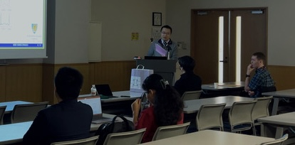

學術活動¶
林醫師是IEEE高級會員，也曾是歐洲磁共振醫學與生物學學會（ESMRMB）的成員。他在該領域持續的工作使他獲得了認可。 林醫師的研究主要集中在以下幾個領域：
醫學影像處理中的計算方法與演算法開發。
MRI影像重建與優化技術。
診斷放射學中醫學物理的應用。
動態主動脈造影。
人工智慧應用與風險。
您可以在Google Scholar、IEEE Xplore或PubMed等找到他的相關發表研究。
除了研究工作，林醫師持續協助審稿臨床科技與醫學相關期刊，包括但不限於以下期刊:
IEEE TCI
Journal of Clinical Medicine
BMC Nursing
Sensors
Tomography
Journal of Imaging
Diagnostics
Applied Sciences
Physics in Medicine and Biology
Animals
Applied System Innovation
International Journal of Environmental Research and Public Health
新加波國際會議發表海報
多倫多國際會議發表研究

<Powered by ChatGPT>